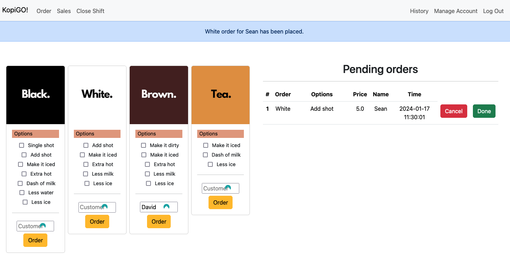
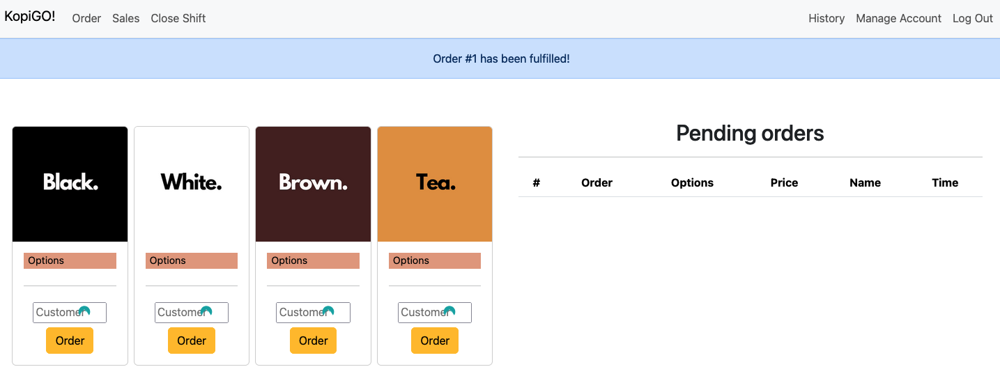
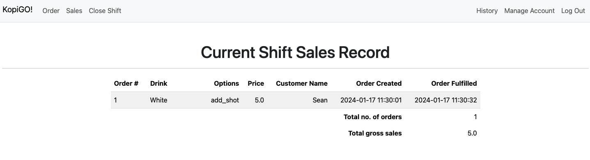
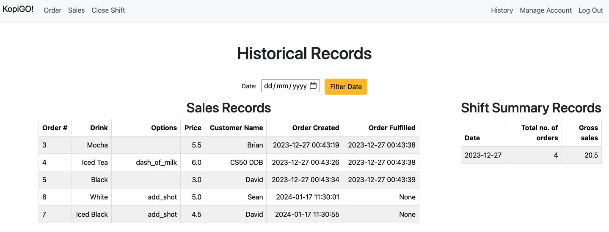

CS50 Final Project: KopiGO!
KopiGO! is a lightweight web-app order management platform for mobile F&B operations, specifically for mobile coffee carts.
Why?
I had an interest in running a mobile coffee cart for events, and I wondered how I would manage customers' orders without a proper POS station setup unlike a brick and mortar cafe. Generally, the practice is to rely on memory to remember what each customer ordered and that they would stay in line at the waiting area.
Thus was born KopiGO! A web-app that can be run on a laptop or tablet that can be easily taken along with the coffee cart.
Objectives
The web-app takes orders through the main dashboard, and the barista is able to at a glance keep track of all pending orders, fulfill finished orders and cancel mis-ordered drinks.
The web-app can also publish the day's sales record at the end of the shift, exporting into a csv. Past historical records can also be referenced through the app itself.
Implementation
The app primarily makes use of Python for coding the backend and the Flask framework to serve out the webpages. A database is used to manage orders, making use of SQL to insert new order entries, update orders entries once they are completed and removing wrong entries (if they exist). Each order item in the menu is represented as a Python object, having attributes that describe each order (price, customisation etc.) and its own methods for each item's distinct modification options.
Modelling each drink item and its customisation options as Python objects allowed for scalability and adapting the system for different F&B setups; adding or removing menu items/customisation options can be easily accomplished, not just on the backend with Python, but with Jinja autopopulating the menu items and options on the front webpage.
Beacuse each drink is a Python object, each order can be easily initialised with the customer name's and modified with the customer's preferences by calling the object's own methods.
Demo Screenshots
Creating an order.

Cancelling an order.
Fulfilling an order.
Sales tab displays the day's orders, both pending and fulfilled orders.
Historical tab reveals all past sales records.
Demo Video
Video explaining the project with live-demostration. Voiced over with robot text-to-speech as I was due to submit the project but was still recovering from a long persistant covid cough.